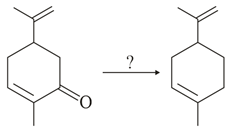
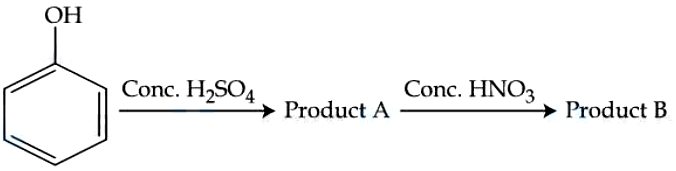

🧪 Hydrocarbons
41
Total Questions
5
Years
4
Clusters
Question Clusters
CHEM-HYDROCAR-AROMATIC_HYDROCARBONS_EAS
Hydrocarbons: Electrophilic Aromatic Substitution (EAS)
CHEM-HYDROCAR-ALKANES_PREPARATION_REACTIONS
Hydrocarbons: Alkanes: Halogenation & Free Radical Reactions
CHEM-HYDROCAR-ALKENES_ELECTROPHILIC_ADDITION
Hydrocarbons: Alkenes: Electrophilic Addition & Markovnikov's Rule
CHEM-HYDROCAR-ALKYNES_REACTIONS
Hydrocarbons: Alkynes: Acidity, Hydrogenation & Hydration
Year-wise Frequency
| Year | Questions | Frequency |
|---|---|---|
| 2021 | 16 | |
| 2022 | 3 | |
| 2023 | 10 | |
| 2024 | 10 | |
| 2025 | 2 |
Questions
Q35 (2021 Shift 2)
The stereoisomers that are formed by electrophilic addition of bromine to trans - but - 2 - ene is/are :
CHEM-2021-0101-S2-Q035
Q45 (2021 Shift 1)
Which of the following is Lindlar catalyst?
CHEM-2021-0101-S1-Q045
Q37 (2021 Shift 2)
An unsaturated hydrocarbon X on ozonolysis gives A . Compound A when warmed with ammoniacal silver nitrate forms a bright silver mirror along the sides of the test tube. The unsaturated hydrocarbon X is :
CHEM-2021-0101-S2-Q037
Q51 (2021 Shift 1)
In the above reaction, 3. 9 g of benzene on nitration gives 4. 92 g of nitrobenzene. The percentage yield of nitrobenzene in the above reaction is _________ % . (Round off to the Nearest Integer). (Given atomic mass : C : 12. 0 u, H : 1. 0 u O : 16. 0 u, N : 14. 0 u )
Answer:
80CHEM-2021-0101-S1-Q051
Q41 (2021 Shift 1)
Match List −I with List −II List −I (process) List −II (catalyst)
CHEM-2021-0101-S1-Q041
Q48 (2021 Shift 2)
An organic compound A on treatment with benzene sulfonyl chloride gives compound B . B is soluble in dil. NaOH solution. Compound A is :
CHEM-2021-0101-S2-Q048
Q40 (2021 Shift 2)
Benzene on nitration gives nitrobenzene in presence of HNO3 and H2 SO4 mixture, where:
CHEM-2021-0101-S2-Q040
Q51 (2021 Shift 1)
Methylation of 10 g of benzene gave 9. 2 g of toluene. Calculate the percentage yield of toluene (Nearest integer)
Answer:
78CHEM-2021-0101-S1-Q051
Q46 (2021 Shift 2)
Which one of the following carbonyl compounds cannot be prepared by addition of water on an alkyne in the presence of HgSO4 and H2 SO4?

CHEM-2021-0101-S2-Q046
Q39 (2021 Shift 1)
Which of the following reaction/s will not give p -aminoazobenzene?
CHEM-2021-0101-S1-Q039
Q38 (2021 Shift 2)
The correct sequence of reagents used in the preparation of 4 -bromo- 2 -nitroethylbenzene from benzene is :
CHEM-2021-0101-S2-Q038
Q36 (2021 Shift 1)
An organic compound 'A' C4H8on treatment with KMnO4 / H+ yields compound 'B' C3H6O. Compound 'A' also yields compound 'B' an ozonolysis. Compound 'A' is :
CHEM-2021-0101-S1-Q036
Q41 (2021 Shift 2)
Match List- I with List- II . List- I List- II
CHEM-2021-0101-S2-Q041
Q40 (2021 Shift 1)
Given below are two statements : one is labelled as Assertion
CHEM-2021-0101-S1-Q040
Q44 (2021 Shift 1)
The structure of product C, formed by the following sequence of reactions is : Benzene KCN − − CH3 COOH + SOCl2 ⟶A → ⟶B → ⟶C AlCl3 −OH
CHEM-2021-0101-S1-Q044
Q60 (2021 Shift 1)
The total number of reagents from those given below, that can convert nitrobenzene into aniline is __________ . (Integer answer) I. Sn −HCl II. Sn −NH4 OH III. Fe −HCl IV. Zn −HCl V. H2 −Pd VI. H2− Raney Nickel

Answer:
5CHEM-2021-0101-S1-Q060
Q38 (2022 Shift 2)
Given below are two statements. Statement I: The presence of weaker π -bonds make alkenes less stable than alkanes Statement II: The strength of the double bond is greater than that of carbon-carbon single bond. In the light of the above statements, choose the correct answer from the options : given below.
CHEM-2022-0101-S2-Q038
Q39 (2022 Shift 2)
Which of the following reagents / reactions will convert ' ' to ' '? A B
CHEM-2022-0101-S2-Q039
Q43 (2022 Shift 2)
In the given reaction 'A' can be
CHEM-2022-0101-S2-Q043
Q47 (2023 Shift 1)
Suitable reaction condition for preparation of Methyl phenyl ether is
CHEM-2023-0101-S1-Q047
Q47 (2023 Shift 2)
Incorrect method of preparation for alcohols from the following is:
CHEM-2023-0101-S2-Q047
Q39 (2023 Shift 2)
Given below are two statements : Statement I : Tropolone is an aromatic compound and has 8𝜋 electrons. Statement II : 𝜋 electrons of > C = O group in tropolone is involved in aromaticity. In the light of the above statements choose the correct answer from the options given below:
CHEM-2023-0101-S2-Q039
Q47 (2023 Shift 2)
Match List-I with List-II. 1-Bromopropane is reacted with reagents in List-I to give product in List-II List-I Reagent List-II Product A. KOH (alc) I. Nitrile B. KCN (alc) II. Ester C. AgNO2 III. Alkene D H3CCOOAg IV. Nitroalkane Choose the correct answer from the options given below
CHEM-2023-0101-S2-Q047
Q45 (2023 Shift 1)
The major product formed in the Friedel-Craft acylation of chlorobenzene is

CHEM-2023-0101-S1-Q045
Q44 (2023 Shift 2)
Given below are two statements, one is labelled as Assertion A and the other is labelled as Reason R. Assertion A : Benzene is more stable than hypothetical cyclohexatriene. Reason R : The delocalized π electron cloud is attracted more strongly by nuclei of carbon atoms. In the light of the above statements, choose the correct answer from the options given below:
CHEM-2023-0101-S2-Q044
Q44 (2023 Shift 1)
17 mg of a hydrocarbon (M.F. C10H16 ) takes up 8. 40 mL of the H2 gas measured at 0°C and 760 mm of Hg . Ozonolysis of the same hydrocarbon yields CH3 −C −CH3, H −C −H, H −C −CH2 −CH2 −C −C −H || || || || || O O O O O The number of double bond/s present in the hydrocarbon is
CHEM-2023-0101-S1-Q044
Q54 (2023 Shift 2)
The one giving maximum number of isomeric alkenes on dehydrohalogenation reaction is (excluding rearrangement) (1) 1 -Bromo- 2 -methylbutane (2) 2 -Bromopropane (3) 2 -Bromopentane (4) 2 -Bromo- 3 , 3 -dimethylpentane

Answer:
3CHEM-2023-0101-S2-Q054
Q36 (2023 Shift 1)
Choose the correct set of reagents for the following conversion transPh - CH = CH - CH3 → cis Ph - CH = CH - CH3
CHEM-2023-0101-S1-Q036
Q45 (2023 Shift 1)
The correct order of melting point of dichlorobenzenes is
CHEM-2023-0101-S1-Q045
Q39 (2024 Shift 1)
Given below are two statements: Statement (I) : Aminobenzene and aniline are same organic compounds. Statement (II) : Aminobenzene and aniline are different organic compounds. In the light of the above statements, choose the most appropriate answer from the options given below:
CHEM-2024-0101-S1-Q039
Q39 (2024 Shift 2)
The set of meta directing functional groups from the following sets is:
CHEM-2024-0101-S2-Q039
Q38 (2024 Shift 2)
Common name of Benzene - 1, 2 - diol is -
CHEM-2024-0101-S2-Q038
Q41 (2024 Shift 1)
Given below are two statements: Statement I : Nitration of benzene involves the following step - Statement II : Use of Lewis base promotes the electrophilic substitution of benzene. In the light of the above statements, choose the most appropriate answer from the options given below :
CHEM-2024-0101-S1-Q041
Q58 (2024 Shift 1)
The number of halobenzenes from the following that can be prepared by Sandmeyer's reaction is _______

Answer:
2CHEM-2024-0101-S1-Q058
Q41 (2024 Shift 1)
Given below are two statements: Statements I: IUPAC name of Compound A is 4-chloro-1,3-dinitrobenzene. Statements II: IUPAC name of Compound B is 4-ethyl-2-methylaniline. In the light of the above statements, choose the most appropriate answer from the options given below:
CHEM-2024-0101-S1-Q041
Q50 (2024 Shift 2)
Given below are two statements : Statement (I) : All the following compounds react with p-toluenesulfonyl chloride. C6H5NH2 (C6H5)2NH (C6H5)3 N Statement (II) : Their products in the above reaction are soluble is aqueous NaOH . In the light of the above statements, choose the correct answer from the options given below
CHEM-2024-0101-S2-Q050
Q55 (2024 Shift 2)
Number of compounds from the following which cannot undergo Friedel-Crafts reactions is: ________. toluene, nitrobenzene, xylene, cumene, aniline, chlorobenzene, m -nitroaniline, m -dinitrobenzene

Answer:
4CHEM-2024-0101-S2-Q055
Q55 (2024 Shift 1)
Among the following, total number of meta directing functional groups is (Integer based) −OCH3, −NO2, −CN, −CH3 −NHCOCH3 , −COR, −OH, −COOH, −Cl
Answer:
4CHEM-2024-0101-S1-Q055
Q49 (2024 Shift 2)
A reagent which gives brilliant red precipitate with Nickel ions in basic medium is
CHEM-2024-0101-S2-Q049
Q54 (2025 Shift 1)
Aman has been asked to synthesise the molecule (x).He thought of preparing the molecule using an aldol condensation reaction. He found a few cyclic alkenes in his laboratory. He thought of performing ozonolysis reaction on alkene to produce a dicarbonyl compound followed by aldol reaction to prepare " x ". Predict the suitable alkene that can lead to the formation of " x ". (1) (2) (3) (4)
Answer:
3CHEM-2025-0101-S1-Q054
Q56 (2025 Shift 2)
Identify correct statement/s : (A) −OCH3 and −NHCOCH3 are activating group. (B) -CN and -OH are meta directing group. (C) -CN and are meta directing group. (D) Activating groups act as ortho - and para −SO3H directing groups. (E) Halides are activating groups. Choose the correct answer from the options given below : (1) (A) only (2) (A), (B) and (E) only (3) (A) and (C) only (4) (A), (C) and (D) only
Answer:
4CHEM-2025-0101-S2-Q056